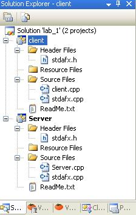

| Лабор. работа №1 |
| Лабор. работа №2 |
| Лабор. работа №3 |
| Лабор. работа №4 |
| Документация |
| Архив |
| Вопросы |
Разработка и отладка программ клиента и сервера в архитектуре взаимодействия “клиент - сервер” с использованием семейства протоколов TCP/IP.
| Цель работы |
Изучение протоколов семейства TCP/IP, функций и методов стандарта WINSOCK, определяющего сетевой интерфейс для программирования сокетов в ОС Microsoft Windows 2000/XP. Разработка программы-клиента и программы-сервера в архитектуре взаимодействия “клиент-сервер” с использованием семейства протоколов TCP/IP.
| Задание |
Разработать программу клиента, которая должна:
- запрашивать у пользователя адрес программы-сервера;
- устанавливать соединение с сервером;
- передавать на сервер данные;
- принимать ответ от сервера и выводить его на экран;
- закрывать соединение с сервером.
Разработать программу сервера, которая должна:
- ожидать запросов от программ клиентов на соединение;
- устанавливать соединение с клиентами;
- принимать данные от клиентов и выполнять их обработку;
- пересылать результат обработки клиенту.
| Алгоритм работы программы-клиента |
Для того, чтобы установить связь с процессом, выполняющимся на другой ЭВМ, клиентская программа должна создать сокет. Сокет в любой современной системе представляет собой особый вид файла, из которого можно читать и в которой можно записывать двоичные данные. При операциях обмена с сокетом нет никакого контроля типов, эта задача возлагается на приложения. На схеме
алгоритма блок “Создание сокета” подразумевает вызов функции socket, который в случае успеха создает сокет – потоковое или дейтаграммное – и семейство протоколов. В данном случае создается потоковый сокет и используется семейство протоколов TCP/IP.
Установка соединения с другим процессом заключается в обмене специальными пакетами и возможно только тогда, когда тот процесс ожидает приема соединений. В противном случае, результат операции будет неудачным и будет получено сообщение о том, что-либо не удалось установить соединение, либо оно было разорвано (зависит от реализации). Для установки соединения требуется указать ЭВМ по IP-адресу или по доменному имени, которое обязательно должно быть преобразовано в IP-адрес, и процесс на этой ЭВМ (по целочисленному идентификатору, называемому портом). Все это реализуется при помощи функции connect. Если соединение успешно установлено, то сразу после вызова этой функции можно вести обмен с гарантированной доставкой пакетов. В противном случае работа невозможна.
Разрыв соединения означает обмен специальными пакетами и может производиться при помощи системного вызова close. Функция close уничтожает сокет, делая его непригодным к использованию (любая операция с ним будет заканчиваться неудачей).
{kind=link}
| Алгоритм работы программы-сервера |
Основной задачей серверной части является обработка. Обмен данными с клиентскими процессами есть важная составляющая часть этой задачи.
Для того, чтобы процессы-клиенты могли связаться с сервером, сервер создает сокет для обмена данными. На схеме
алгоритма это представлено блоком “Создание сокета”. Производится так же, как и в клиентской программе.
Следующий блок – “Получение локального адреса” – принципиально важен. Он служит для того, чтобы все запросы на соединения, приходящие на данную ЭВМ и обращающиеся к указанному порту, операционная система направляла данному процессу. Операция производится посредством системного вызова bind, в котором указывается созданный ранее сокет, IP–адрес ЭВМ (как правило, это константа 0) и идентификатор процесса, т. е. порт. После этого, разумеется, в случае успеха, программа сервера вызывает функцию listen, которая говорит операционной системе о том, что процесс ожидает поступления запросов на соединение на данный сокет и, что эти запросы нужно ставить в очередь указанной длины (в штуках).
Получение запроса на соединение происходит тогда, когда клиентский процесс вошел в блок “Установка соединения”, т. е. вызвал функцию connect. ОС сервера при этом создает копию сокета, чтобы программа могла на первом экземпляре продолжить работу, а на другом – вести обмен с подключившимся клиентом. Следующий блок – “Создание нового потока” – подразумевает порождения новой параллельной ветки программы, которая будет вести обработку данных. В системах Windows это обычно нить (thread), создаваемая при помощи функции _beginthread, в UNIX-системах это новый процесс, создаваемый при помощи вызова fork.
По окончании работы с клиентом серверный процесс закрывает свою копию сокета и уничтожается.
| Порядок выполнения лабораторной работы |
1. Запустить Microsoft Visual Studio 2005.
2. Выбрать в главном меню File->Open->Project/Solution.
3. Указать путь к файлу lab_1.sln и далее нажать кнопку Open.
4. Слева в окне выбрать вкладку Solution Explorer. Все файлы проекта будут представлены в этом окне. Двойное нажатие левой кнопкой мыши на файле откроет его для редактирования в основной области экрана.

Рисунок 1. Окно Solution Explorer
5.Нажать кнопку F7. Проект будет откомпилирован целиком. Внизу в окне Output будет представлен отчет.

Рисунок 2. Окно Output
Обратите внимание на последнюю строчку в проекте, в ней приведены результаты компиляции:
========== Build: 2 succeeded, 0 failed, 0 up-to-date, 0 skipped ==========
6. В папке Debug (или Release) будут созданы исполняемые файлы программ: server.exe – программа-сервер, client.exe – программа-клиент.
| Описание работы программ |
Программа-сервер
После запуска сервера, программа автоматически перейдет в режим ожидания соединения от клиента. Никаких действий более выполнять не требуется. Для выхода из программы использовать комбинацию клавиш CTRL+C. После подключения клиента в окне программы отобразится его ip-адрес. А после отправки сообщения клиентом в окне сервера появится принятая информация.

Рисунок 3. Работа сервера
Программа-клиент
После запуска программы необходимо указать ip-адрес сервера, или нажать клавишу Enter, тогда в качестве ip-адреса будет использоваться локальный адрес (127.0.0.1). После соединения с сервером необходимо ввести сообщение и нажать клавишу Enter для отправки. После этого от сервера придет подтверждение принятия сообщения. На этом работа клиента будет завершена.

Рисунок 4. Работа клиента